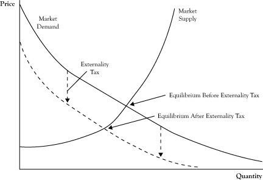

The most practiced economic instrument to address market externality is a tax. Those who purchase gasoline are likely to pay the sum of the price required by the gasoline station owner to cover his costs (and any economic profit he has the power to generate) plus a tax on each unit of gasoline that covers the externality cost of gasoline consumption such as air pollution, wear and tear on existing public roads, needs for expanding public roads to support more driving, and policing of roads.
Theoretically, there is an optimal level for setting a tax. The optimum taxThe value of the marginal externality damage or benefit created by consumption of an additional unit from a market exchange, which is used to correct a positive or negative externality. is the value of the marginal externality damage created by consumption of an additional item from a market exchange. If each gallon of gasoline causes $1.50 worth of externality damage, that would be the correct tax.
In the case of positive externalities, the optimum tax is negative. In other words, the government actually pays the seller an amount per unit in exchange for a reduction of an equal amount in the price. Theoretically, the optimum tax would be the negative of the marginal value of a unit of consumption to third parties. For example, if the positive externality from hiring an unemployed person and giving that person employment skills would be worth $2.00 per hour, the employer could be subsidized $2.00 per hour to make it more attractive for them to hire that kind of person.
Although the notion of an externality tax sounds straightforward, actual implementation is difficult. Even when there is general agreement that a significant externality exists, placing a dollar value on that externality can be extremely difficult and controversial. The optimal tax is the marginal impact on third parties; however, there is no guarantee that the total tax collected in this fashion will be the total amount needed to compensate for the total externality impact. The total collected may be either too little or too much.
Also, recall the impact of a tax from the earlier discussion of comparative statics in competitive markets in Chapter 6 "Market Equilibrium and the Perfect Competition Model". A tax has the impact of either raising the supply curve upward (if the seller pays the tax) or moving the demand curve downward (if the buyer pays the tax). See Figure 8.1 "Change in Market Equilibrium in Response to Imposing an Externality Tax" for a graphic illustration of a tax charged to the buyer. To the extent that the supply and demand curves are price elastic, the tax will lower the amount consumed, thereby diminishing the externality somewhat and possibly changing the marginal externality cost. Consequently, actual externality taxes require considerable public transaction costs and may not be at the correct level for the best improvement of market efficiency.
Figure 8.1 Change in Market Equilibrium in Response to Imposing an Externality Tax
Note the tax may cause a decrease in the equilibrium quantity, which may change the optimal externality tax.